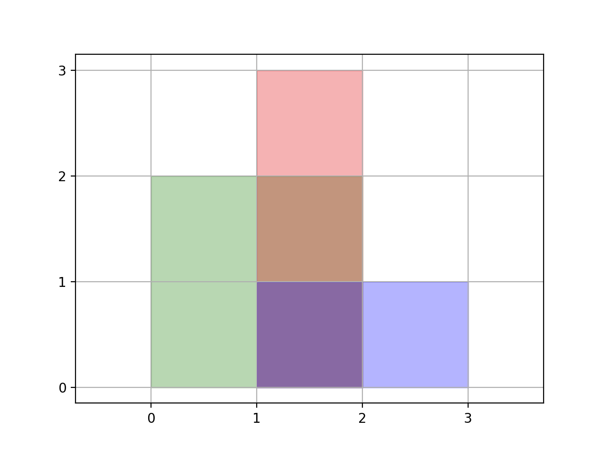

850. 矩形面积 II
把所有 x、y 坐标离散化成 ≤400×400 的格子，每格记被几个矩形盖住，计数 > 0 的格子按真实宽高求和。
思路
- 所有矩形的横竖边把平面切成小格子：
x、y坐标排序去重后，格子边界只会落这些值上。 - 每个矩形把自己覆盖的格子计数 +1（坐标用二分定位，下标即
[xs[i], xs[i+1])区间）。 - 答案 = 所有
cnt > 0的格子的真实面积之和：重叠部分只算一次，long累加后对 10⁹+7 取模。
图解
最优解
1import java.util.*;2 3class Solution {4 public int rectangleArea(int[][] rectangles) {5 final int MOD = 1_000_000_007;6 // 收集全部 x、y 排序去重：平面被切成 ≤ 400×400 个小格子7 int[] xs = new int[rectangles.length * 2], ys = new int[rectangles.length * 2];8 int xn = 0, yn = 0;9 for (int[] r : rectangles) { xs[xn++] = r[0]; xs[xn++] = r[2]; ys[yn++] = r[1]; ys[yn++] = r[3]; }10 xn = uniq(xs, xn);11 yn = uniq(ys, yn);12 // cnt[i][j]：格子 [xs[i],xs[i+1]) × [ys[j],ys[j+1]) 被几个矩形盖住13 int[][] cnt = new int[xn][yn];14 for (int[] r : rectangles) {15 int x1 = Arrays.binarySearch(xs, 0, xn, r[0]), x2 = Arrays.binarySearch(xs, 0, xn, r[2]);16 int y1 = Arrays.binarySearch(ys, 0, yn, r[1]), y2 = Arrays.binarySearch(ys, 0, yn, r[3]);17 for (int i = x1; i < x2; i++)18 for (int j = y1; j < y2; j++)19 cnt[i][j]++;20 }21 // 被盖过（cnt > 0）的格子各算一次面积22 long ans = 0;23 for (int i = 0; i + 1 < xn; i++)24 for (int j = 0; j + 1 < yn; j++)25 if (cnt[i][j] > 0) ans += (long) (xs[i + 1] - xs[i]) * (ys[j + 1] - ys[j]);26 return (int) (ans % MOD);27 }28 29 // 排序去重，返回新长度30 private int uniq(int[] a, int n) {31 Arrays.sort(a, 0, n);32 int m = 0;33 for (int i = 0; i < n; i++) if (m == 0 || a[i] != a[m - 1]) a[m++] = a[i];34 return m;35 }36}题目
给你一个轴对齐的二维数组 rectangles 。 对于 rectangle[i] = [x1, y1, x2, y2]，其中 (xi1, yi1) 是该矩形 左下角 的坐标， (xi2, yi2) 是该矩形 右上角 的坐标。
计算平面中所有 rectangles 所覆盖的 总面积 。任何被两个或多个矩形覆盖的区域应只计算 一次 。
返回 总面积 。因为答案可能太大，返回 109 + 7 的 模 。
示例 1：

输入：rectangles = [[0,0,2,2],[1,0,2,3],[1,0,3,1]] 输出：6 解释：如图所示，三个矩形覆盖了总面积为 6 的区域。 从(1,1)到(2,2)，绿色矩形和红色矩形重叠。 从(1,0)到(2,3)，三个矩形都重叠。
示例 2：
输入：rectangles = [[0,0,1000000000,1000000000]] 输出：49 解释：答案是 1018 对 (109 + 7) 取模的结果， 即 49 。
提示：
1 <= rectangles.length <= 200rectanges[i].length = 40 <= xi1, yi1, xi2, yi2 <= 109xi1 <= xi2yi1 <= yi2- 所有矩阵面积不为 0。
题面取自力扣当前版本。
数据快照 2026-11-04。题面版权归力扣所有，本站点仅供本人学习使用，请勿对外发布。